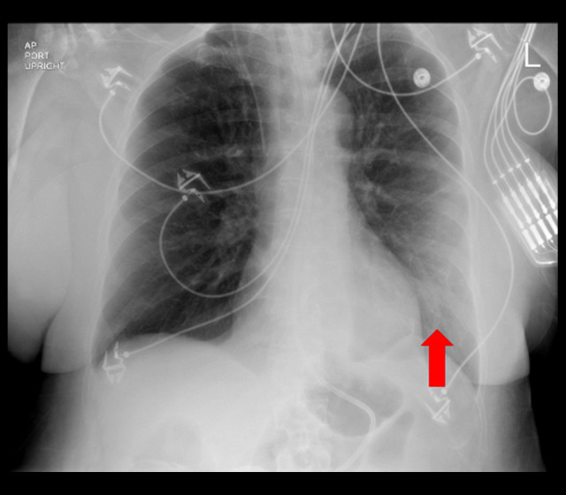
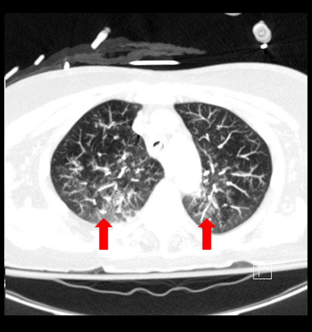
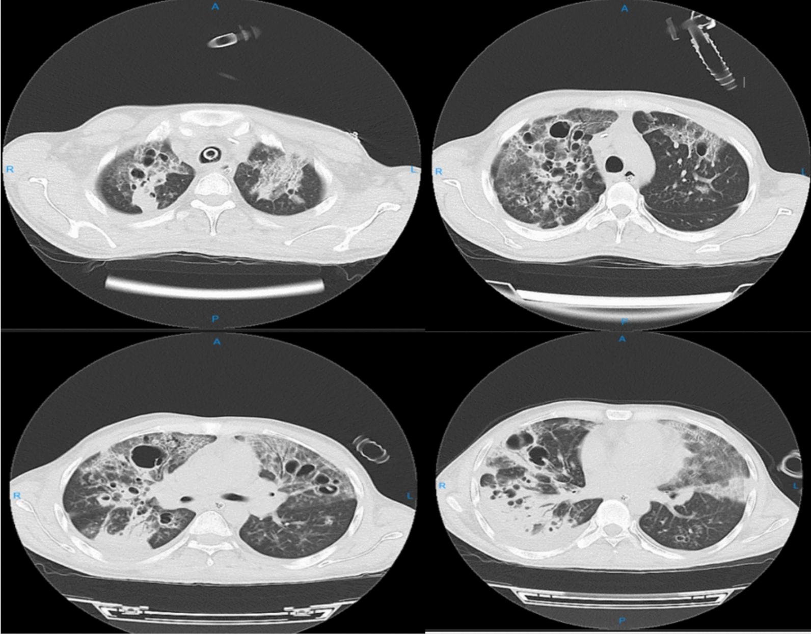
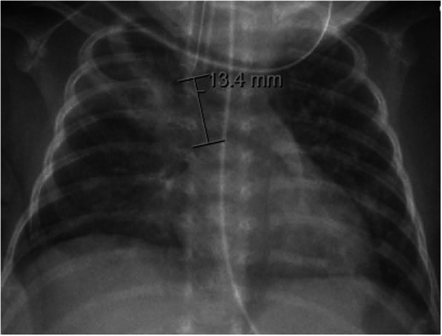

084 — Viêm phổi thở máy (VAP): X-quang/CT, cấy định lượng & bó dự phòng vi hít sặc ở ICU / Ventilator-associated pneumonia
Tags: pattern:dong-dac pattern:hang vung:phoi score:CPIS protocol:X-quang-tai-giuong protocol:CT-lat-mong protocol:cay-dinh-luong incidentaloma:xep-phoi
Mức chắc chắn (certainty): tổng hợp y văn (literature synthesis) — số liệu lấy từ các bài tổng quan/đoàn hệ mở (PMC13549390, PMC13126261, PMC11379627, PMC11330674, PMC13332427), ca minh họa từ hai báo cáo ca CC BY-NC-ND; không suy diễn ngoài nguồn, số nào chưa đối chiếu thì ghi rõ.
Bài này trả lời 3 câu hỏi thực hành: (1) mờ phổi mới ở người thở máy có phải VAP không? (2) lấy mẫu – ngưỡng cấy nào đủ chốt? (3) bó dự phòng nào thực sự có số liệu, và cái nào đã bị "hạ bậc"? Viêm phổi hít sặc cộng đồng và VFSS/FEES ở trẻ đã có ở 081; biến chứng ống nuôi ăn ở 083.

X-quang ngực AP tại giường ngày 7 ở bệnh nhân vừa được đặt lại nội khí quản: ống nội khí quản, điện cực và dây theo dõi; mũi tên đỏ chỉ đám mờ mới ở thùy dưới trái. Đây là kiểu "mờ mới + sốt + tăng bạch cầu" điển hình của VAP. Nguồn: Kalinoski M, Ingraham NE, Am J Case Rep 2023, PMC10584195, Fig. 3, CC BY-NC-ND 4.0 (giữ nguyên bản).1. Tổng quan bệnh học – cơ chế hình ảnh
- Định nghĩa: VAP là viêm phổi xuất hiện sau ≥ 48 giờ đặt nội khí quản/mở khí quản (≥ 2 ngày lịch); viêm phổi trong vòng 48 giờ sau rút ống cũng được xếp vào phổ VAP (PMC13549390). Đây là mốc phân biệt với viêm phổi cộng đồng/viêm phổi hít sặc lúc nhập viện — cùng một hình ảnh đông đặc nhưng khác thời điểm và khác vi khuẩn.
- Gánh nặng (số liệu cần nhớ):
- Mỹ (CDC/NHSN): trung vị 1,1 ca/1000 ngày thở máy ở ICU nội–ngoại.
- Các nước thu nhập thấp–trung bình (INICC): 11,96 ca/1000 ngày thở máy giai đoạn 2015–2020 (giảm từ 24,1 giai đoạn 2002–2005) — vẫn cao gấp ~10 lần Mỹ (PMC13549390).
- Tử vong trong các đoàn hệ ICU: 25–76%, tử vong quy do VAP khoảng 30%, RR tử vong ≈ 2,0; kéo dài thở máy 4,3 ngày (PMC13126261).
- Chi phí quy do: 9.966 USD (Mỹ) và 20.965,28 EUR (Tây Ban Nha) mỗi ca (PMC13549390).
- Cơ chế then chốt — vi hít sặc qua bóng chèn (microaspiration): ống nội khí quản nối hầu với khí quản, xóa hàng rào thanh môn; dịch hầu họng (và dịch dạ dày trào ngược) chảy men theo nếp gấp của bóng chèn xuống phổi. Màng sinh học (biofilm) bám mặt trong 1/3 dưới ống nội khí quản là ổ chứa vi khuẩn; mỗi lần hút ống có thể bong mảng biofilm xuống phổi dưới áp lực dương của máy thở (PMC11379627). Vì vậy VAP không phải bệnh "lây từ ngoài vào" đơn thuần mà là bệnh của hàng rào bị bắc cầu + ứ đọng + vi khuẩn bệnh viện.
- TẠI SAO hình ảnh trông như vậy (vật lý):
- Phế nang bình thường chứa khí (−800 đến −900 HU); khi đầy dịch viêm/mủ, tỷ trọng tăng lên khoảng 0–40 HU → trên X-quang thành đám mờ, trên CT thành đông đặc. Phế quản trong vùng đông đặc vẫn chứa khí → dấu phế quản hơi (air bronchogram) — dấu hiệu chứng minh mờ trong phế nang, không phải xẹp phổi do tắc phế quản trung tâm.
- Trọng lực quyết định vị trí: dịch viêm và vi hít sặc lắng ở vùng phụ thuộc (dependent) — thùy dưới, phân thùy sau; vì thế VAP điển hình là đông đặc đáy phổi, thường phải hơn trái.
- Vì sao X-quang kém hơn CT: phim AP tại giường bị phóng đại, xoay, hít vào kém, chồng các đường dẫn lưu/điện cực; độ nhạy thấp, và độ đặc hiệu chỉ khoảng 55% khi chỉ dựa vào "mờ + triệu chứng" (PMC13332427). CT lát mỏng phát hiện đông đặc, dấu phế quản hơi, hang, tràn dịch và phân bố theo trọng lực rõ hơn nhiều.
- Mô bệnh: viêm phế nang cấp với bạch cầu đa nhân trung tính + fibrin + dịch phù; thể nặng gây hoại tử phế nang → hang (S. aureus, Pseudomonas, Klebsiella, E. coli, Acinetobacter). Trẻ nhỏ có thể tạo pneumatocele (nang khí) do đường thở mỏng, dễ van một chiều.
2. Mẫu hình + chẩn đoán phân biệt theo phân bố (Gamut)
- Đông đặc đơn ổ vùng phụ thuộc (thùy dưới phải/trái): VAP điển hình do vi hít sặc; cũng gặp trong viêm phổi hít sặc, xẹp phổi thùy dưới.
- Đông đặc đa ổ/lan tỏa hai bên: VAP nặng, ARDS kèm VAP, phù phổi, xẹp phổi lan tỏa, xuất huyết phế nang. "Mờ hai bên" không loại trừ VAP nhưng cũng không chứng minh VAP.
- Đông đặc + hang/hoại tử: VAP do vi khuẩn sinh độc lực (S. aureus, Pseudomonas, Klebsiella, E. coli, Acinetobacter); lao, nấm, nhồi máu phổi, áp-xe sau hít sặc.
- Nốt/đám mờ ngoại vi đa dạng + mạch nuôi (feeding vessel): thuyên tắc nhiễm khuẩn (septic emboli) từ catheter/dòng máu — bệnh cảnh ICU rất dễ nhầm VAP.
- Mờ một bên + mất thể tích (dịch chuyển rãnh liên thùy, cơ hoành lên cao): xẹp phổi do tắc ống/nút nhầy — "VAP giả".
- Mờ nhanh–tan nhanh: phù phổi, xẹp phổi sau hút/physiotherapy; VAP thường dai dẳng và tiến triển trong 48–72 giờ.
- Gợi nhớ "SUCTION" (cơ chế vi hít sặc): Supine (đầu giường thấp) · Unconscious/sedated (giảm phản xạ nuốt) · Cuff leak (áp lực bóng chèn thấp) · Tube biofilm (màng sinh học trên ống) · Immobility (ít vận động, ứ đọng) · Oral hygiene kém · Nutrition (nuôi qua ống, trào ngược).
3. Bảng so sánh phân biệt (ma trận đối chiếu)
| Thực thể (entity) | Hình ảnh điển hình | Chốt vào (rule-in) | Chốt loại (rule-out) | Gợi ý xác nhận |
|---|---|---|---|---|
| VAP | Đông đặc mới/tiến triển vùng phụ thuộc, dấu phế quản hơi, có thể hang; xuất hiện sau ≥ 48 giờ thở máy | Mờ mới + ≥ 3 dấu lâm sàng (sốt, đờm mủ, tăng/giảm BC, giảm oxy hóa) + cấy định lượng dương | Mờ tan nhanh sau hút/physio; không có bằng chứng vi khuẩn và không có bệnh cảnh nhiễm | Cấy ETA/BAL/PSB trước kháng sinh; so phim cũ |
| Xẹp phổi (atelectasis) | Mờ đồng nhất theo thùy, mất thể tích (rãnh/cơ hoành dịch), không có phế quản hơi trừ khi tắc một phần | Mờ + mất thể tích + tan nhanh sau hút/physio | Mờ dai dẳng, tiến triển, kèm phế quản hơi → nghĩ đông đặc viêm | So phim trước–sau hút; CT nếu nghi tắc |
| Phù phổi | Mờ hai bên, cánh bướm, dày vách, tràn dịch hai bên, tim to | Đối xứng + Kerley B + đáp ứng lợi tiểu nhanh | Mờ không đối xứng, có hang, không đáp ứng lợi tiểu | Siêu âm tim, BNP, đáp ứng điều trị |
| ARDS | Mờ lan tỏa hai bên, không giải thích hết bằng tràn dịch/xẹp, đông đặc vùng phụ thuộc | PaO2/FiO2 ≤ 300 + mờ hai bên không phải phù/xẹp + khởi phát trong 1 tuần | Mờ khu trú một thùy, có hang, có ổ áp-xe | Khí máu, CT; VAP có thể chồng lên ARDS |
| Viêm phổi hít sặc (aspiration pneumonitis) | Đông đặc vùng phụ thuộc (thùy dưới phải), xuất hiện 2–6 giờ sau hít sặc | Bệnh cảnh hít sặc rõ + mờ xuất hiện rất sớm + sốt nhẹ | Mờ xuất hiện sau 48 giờ thở máy → nghĩ VAP | Bệnh sử, thời điểm; cấy phân biệt nhiễm |
| Thuyên tắc nhiễm khuẩn (septic emboli) | Nốt/đám mờ ngoại vi đa ổ, có thể hang, mạch nuôi | Nhiễm khuẩn huyết + catheter + nốt ngoại vi đa ổ | Đông đặc một vùng lớn vùng phụ thuộc → nghĩ VAP | Cấy máu, siêu âm tim, CT |
| Lao/nấm phổi | Hang thành dày/mỏng, nốt vệ tinh, tree-in-bud, phân bố thùy trên | Nốt vệ tinh + tree-in-bud + vị trí đỉnh–thùy trên | Hang đơn độc vùng đáy ở BN thở máy cấp → nghĩ VAP hoại tử | AFB/PCR, Galactomannan, sinh thiết khi phù hợp |
| CPIS cao đơn thuần | Không có hình ảnh riêng | CPIS > 6 gợi ý nhưng không chốt | CPIS thấp không loại trừ VAP | Chỉ dùng hỗ trợ; AUC của CPIS cải tiến chỉ 0,686 (PMC13289337) |

CT ngực cửa sổ nhu mô ở cùng bệnh nhân: đông đặc đa ổ hai bên, dấu phế quản hơi — tổn thương đã có từ lúc nhập viện (viêm phổi cộng đồng), không phải VAP. Chính vì vậy mốc thời gian ≥ 48 giờ và so phim cũ mới là chốt. Nguồn: Kalinoski M, Ingraham NE, Am J Case Rep 2023, PMC10584195, Fig. 2, CC BY-NC-ND 4.0.4. Protocol chụp + lấy mẫu + bó dự phòng
4.1 Chẩn đoán: lâm sàng + hình ảnh (đừng chỉ nhìn phim)
- Người lớn: nghi VAP khi thở máy ≥ 48 giờ và có mờ phổi mới/tiến triển kèm ≥ 2–3 dấu: sốt/hạ nhiệt, đờm mủ hoặc tăng tiết, tăng bạch cầu (hoặc giảm), giảm oxy hóa.
- Trẻ < 1 tuổi (CDC): thở máy ≥ 2 ngày + giảm trao đổi khí + ≥ 3/7 dấu (dao động nhiệt độ, BC ≤ 4.000 hoặc ≥ 15.000/mm³ kèm ≥ 10% band, đờm mủ mới, ngưng thở/suy hô hấp, ran–khò khè, ho, nhịp tim < 100 hoặc > 170) + ≥ 2 phim có mờ mới/tiến triển dai dẳng (PMC11379627).
- Bản sửa cho NICU (neo-VAP): tăng hỗ trợ hô hấp + phim mới + 3/5 dấu (dao động nhiệt, nhịp tim bất thường, suy hô hấp, tăng tiết ống, BC bất thường) (PMC11379627).
- Hình ảnh: X-quang tại giường so với phim trước là bước đầu; CT lát mỏng có cản quang khi mờ không rõ, nghi áp-xe/tràn dịch cạnh phổi, hang hoặc không đáp ứng điều trị. Siêu âm phổi tại giường là lựa chọn bổ trợ: đông đặc > 0,5 cm, tràn dịch, dấu phế quản động học; một nghiên cứu ở trẻ sơ sinh cho Se 94%, AUC 0,97 (PMC11379627) — số này chưa ngoại suy cho người lớn.
- Đừng nhầm "mờ" với "nhiễm": trong một đoàn hệ được đối chiếu bằng BAL, 28% ca không viêm phổi vẫn được bác sĩ nghĩ "khả năng cao" là viêm phổi, trong khi 20% ca viêm phổi thật bị bỏ sót (PMC13332427) — chẩn đoán VAP thiên về quá chẩn đoán.
4.2 Lấy mẫu & ngưỡng cấy định lượng
- Lấy mẫu TRƯỚC kháng sinh (nếu không trì hoãn được điều trị thì lấy ngay sau khi bắt đầu).
- Ngưỡng dương tính (CDC, theo phương pháp): hút nội khí quản định lượng (ETA) ≥ 10⁵ CFU/mL; BAL ≥ 10⁴ CFU/mL; PSB (protected specimen brush) ≥ 10³ CFU/mL (PMC11330674).
- Mẫu đờm "mủ": ≥ 25 bạch cầu đa nhân và ≤ 10 tế bào biểu mô trên một vi trường độ phóng đại thấp (PMC11379627).
- ETA định lượng so với BAL: thử nghiệm ngẫu nhiên 73 bệnh nhân cho thấy điều trị theo ETA định lượng có kết cục tương đương BAL (tử vong 28 ngày 37,8% vs 25,0%; p = 0,353) — ETA là lựa chọn hợp lý khi không có nội soi phế quản (PMC4301249).
- Cấy máu: ít giá trị trong VAP đơn thuần; nên lấy khi nghi nhiễm khuẩn huyết/tràn dịch cạnh phổi (PMC11379627).
- Pitfall vi sinh: MRSA nasal swab âm không loại trừ VAP do MRSA ở bệnh nhân nặng — ca minh họa có swab âm nhưng ETA dương MRSA, phải dùng lại vancomycin (PMC10584195).
4.3 Kháng sinh & đánh giá lại (có mốc thời gian)
- Khởi đầu theo nguy cơ: phủ S. aureus (gồm MRSA nếu nguy cơ) + Pseudomonas + trực khuẩn Gram âm bệnh viện; xuống thang theo cấy và kháng sinh đồ.
- Bộ tiêu chuẩn Goerens (neo-VAP) để quyết định thời gian: đủ 3 tiêu chuẩn → ≥ 7–14 ngày; chỉ 1–2 tiêu chuẩn → 24–36 giờ + đánh giá lại 48–72 giờ; 0–1 tiêu chuẩn → ngừng sau 24–36 giờ (PMC11379627).
- Đánh giá lại 48–72 giờ: nếu không cải thiện, xem lại chẩn đoán (xẹp, ARDS, phù, áp-xe, tràn dịch) và ổ nhiễm ngoài phổi trước khi leo thang kháng sinh.
4.4 Bó dự phòng — số liệu và "hạ bậc" cần biết
| Biện pháp | Ngưỡng / cách làm | Bằng chứng & mức |
|---|---|---|
| Đầu giường cao | 30°–45° nếu không chống chỉ định | Giảm trào ngược/vi hít sặc; mức 2b (PMC13549390) |
| Vệ sinh miệng | Mỗi 6–8 giờ, bàn chải + súc miệng | Mức 2b; KHÔNG dùng chlorhexidine thường quy (mức 1a) (PMC13549390) |
| Áp lực bóng chèn | 25–30 cmH₂O, theo dõi/điều chỉnh liên tục | Mức 2b; kết hợp hút dịch dưới thanh môn (SSD) mức 1a (PMC13549390) |
| Ống có kênh SSD | Chọn khi dự kiến thở máy > 72 giờ | OR VAP 0,42 (95% CI 0,29–0,61); giảm 0,44 ca/1000 ngày (PMC13126261) |
| Thay dây thở | Không thay thường quy; chỉ khi bẩn/hỏng | Mức 2b (PMC13549390) |
| HME (bộ trao đổi ẩm–nhiệt) | Thay mỗi 5–7 ngày | Mức 2b (PMC13549390) |
| Hút kín | Ưu tiên khi nhiễm/đa kháng hoặc bệnh lây hô hấp | Mức 2b (PMC13549390) |
| Ngừng an thần/đánh giá rút ống hằng ngày | Đánh giá mỗi ngày | Giảm ngày thở máy — yếu tố nguy cơ độc lập (PMC13549390) |
| Vận động sớm | Bắt đầu sớm khi huyết động cho phép | Mức 1c (PMC13549390) |
| Kháng sinh dự phòng toàn thân/SDD | Không dùng thường quy | Mức 2b, không giảm tử vong (PMC13549390) |
| Ức chế acid dạ dày thường quy | Không | Mức 1a (PMC13549390) |
- Hiệu quả của cả bó (quality improvement): VAP giảm 36,4 → 23/1000 ngày; 8,5 → 2,5; 8,9 → 3,9 (trẻ < 750 g); 11,7 → 1,9 — tất cả p < 0,05 (PMC11379627).
- Cảnh báo ở trẻ sơ sinh: nâng đầu giường xung đột với khuyến cáo ngủ an toàn của AAP và có thể tăng trào ngược ở trẻ đủ tháng; chlorhexidine cũng không được khuyến cáo thường quy ở trẻ — đừng bê nguyên bó người lớn vào NICU (PMC11379627, PMC13549390).
flowchart TD
A["Bệnh nhân thở máy ≥ 48 giờ<br/>mờ phổi mới hoặc tiến triển"] --> B{"Đủ tiêu chuẩn lâm sàng?<br/>sốt, đờm mủ, bạch cầu, giảm oxy hóa"}
B -->|Không| C["Tìm nguyên nhân khác:<br/>xẹp, phù, ARDS, thuyên tắc"]
B -->|Có| D["Lấy mẫu TRƯỚC kháng sinh:<br/>ETA / BAL / PSB + cấy máu nếu cần"]
D --> E["Kháng sinh theo nguy cơ<br/>MRSA + Pseudomonas + Gram âm"]
E --> F{"Cấy định lượng dương?<br/>ETA ≥ 10^5, BAL ≥ 10^4, PSB ≥ 10^3"}
F -->|Có| G["Tiếp tục, xuống thang theo kháng sinh đồ"]
F -->|Không| H["Xem lại chẩn đoán và ổ nhiễm ngoài phổi"]
G --> I{"Đáp ứng sau 48–72 giờ?"}
H --> I
I -->|Không| J["CT ngực có cản quang:<br/>áp-xe, tràn dịch, hang, xẹp"]
I -->|Có| K["Thời gian: 7 ngày nếu đáp ứng; kéo dài nếu hang/áp-xe"]
4.5 Khác biệt nhi khoa / sơ sinh (đọc nhanh)
- Định nghĩa CDC cho trẻ < 1 tuổi không hoàn toàn khớp người lớn; không có tiêu chuẩn riêng cho sơ sinh non tháng — đây là lỗ hổng đã được nêu trong y văn (PMC11379627).
- Siêu âm phổi hữu ích hơn X-quang ở trẻ có bệnh phổi mạn/BPD; tiêu chuẩn đáng nghi: đông đặc > 0,5 cm, tràn dịch, dấu phế quản động học.
- Pneumatocele ở trẻ nhỏ là dấu hiệu CDC của VAP (trẻ ≤ 1 tuổi) — đừng nhầm với hang hoại tử người lớn.
5. Biến thể bình thường và cạm bẫy
- "Mờ mới" trên phim AP tại giường có thể là giả: xoay nhẹ, hít vào kém, chồng vai/mô mềm, điện cực, dịch truyền — luôn so cùng tư thế, cùng khoảng cách, và đối chiếu CT khi quyết định điều trị dài.
- Xẹp phổi là kẻ bắt chước số 1: mờ + mất thể tích, tan nhanh sau hút/physio; nếu mờ dai dẳng và có phế quản hơi, nghiêng về đông đặc viêm.
- Phù phổi/ARDS không loại trừ VAP: VAP có thể chồng lên ARDS; đừng dừng lại ở chẩn đoán "ARDS" khi có mờ không đối xứng, hang hoặc đờm mủ mới.
- CPIS không đủ chốt: CPIS cải tiến chỉ đạt AUC 0,686 so với BAL định lượng; dùng như yếu tố hỗ trợ, không thay cấy (PMC13289337).
- VAE ≠ VAP: hệ thống giám sát VAE (VAC → IVAC → PVAP) có độ nhạy ~40%, PPV < 25% so với VAP; dùng cho giám sát chất lượng, không dùng để chẩn đoán cá nhân (PMC13533606).
- Hang trên phim thở máy: nghĩ VAP hoại tử trước, nhưng vẫn phải loại lao/nấm/nhồi máu — nhất là khi hang ở thùy trên, có nốt vệ tinh.
- Đo trên ảnh ≠ đo tổn thương: nhiều phim có chú thích đo độ sâu ống nội khí quản (ví dụ 13,4 mm) — đừng đọc con số đó như kích thước đám mờ.
- Satisfaction of search: khi đã thấy đông đặc, vẫn phải rà tràn khí màng phổi, tràn dịch, áp-xe, ống/chăm sai vị trí — đây là các biến chứng đổi xử trí ngay.
6. Tự lượng giá — Blind Quiz
Ca 1 — Nữ 58 tuổi, sốc nhiễm khuẩn, thở máy; ngày 6 rút ống, cùng ngày sốt lại và suy hô hấp phải đặt lại ống. Phim ngày 7:
- Câu hỏi: Dấu hiệu chính? Có phải VAP không? Cấy gì và tại sao swab mũi âm không đủ loại trừ?
Bấm để hiện đáp án (findings + chẩn đoán)
- Dấu hiệu: đám mờ mới thùy dưới trái (mũi tên đỏ) trên nền phim trước đó không có; ống nội khí quản tại chỗ.
- Chẩn đoán: VAP — xuất hiện sau khi đặt lại ống, kèm sốt/tăng bạch cầu/suy hô hấp.
- Xử trí: cấy dịch hút nội khí quản (ETA) trước/sát lúc khởi đầu kháng sinh; ca nguồn có ETA dương MRSA dù swab mũi âm → không được ngừng vancomycin chỉ vì swab âm ở bệnh nhân nặng.
- Nguồn: Kalinoski M, Ingraham NE, Am J Case Rep 2023, PMC10584195, Fig. 3, CC BY-NC-ND 4.0.
Ca 2 — Nam 27 tuổi, chấn thương ngực + xuất huyết dưới nhện, thở máy; CT ngực sau vài ngày:

- Câu hỏi: Mô tả tổn thương? Chẩn đoán? Ba phân biệt cần loại trừ?
Bấm để hiện đáp án
- Dấu hiệu: hang thành dày nhiều ổ hai bên, đông đặc quanh hang, xơ hóa và tràn dịch màng phổi phải ít–vừa; tổn thương đáy phổi chiếm ưu thế.
- Chẩn đoán: VAP thể hoại tử tạo hang — ca nguồn cấy ra E. coli đa kháng (hiếm nhưng đang nổi lên).
- Phân biệt: lao/nấm (nốt vệ tinh, thùy trên), nhồi máu phổi, áp-xe sau hít sặc; cấy định lượng + AFB/nấm quyết định.
- Nguồn: Dahmardeh AR, Keykha A, J Med Case Rep 2025, PMC12625286, Fig. 3, CC BY-NC-ND 4.0.
Ca 3 — Sơ sinh 27 tuần, thở máy 5 tuần, X-quang ngực:

- Câu hỏi: Đọc được gì? Con số 13,4 mm là gì? Vì sao khó chẩn đoán VAP ở trẻ này?
Bấm để hiện đáp án
- Dấu hiệu: ống nội khí quản; 13,4 mm là độ sâu ống (đo từ đầu ống đến vị trí đánh dấu), không phải kích thước tổn thương; nhu mô có mờ rải rác hai bên, khó tách khỏi bệnh phổi mạn/BPD.
- Chẩn đoán: ca nguồn được chẩn đoán VAP sơ sinh theo tiêu chuẩn CDC (Klebsiella pneumoniae + S. aureus), nhưng hình ảnh không đặc hiệu — phải ghép lâm sàng + cấy ETA.
- Bài học: ở trẻ non tháng, phim "bẩn" là chuyện thường; đừng chẩn đoán VAP chỉ vì phổi mờ.
- Nguồn: Bondarev DJ, Ryan RM, Mukherjee D, J Perinatol 2024, PMC11379627, Fig. 2, CC BY 4.0.
Bài liên quan chéo
- 001 – Tổng quan hệ Ngực
- 030 – Đông đặc & xẹp phổi: học thuyết mất thể tích
- 025 – Hang & nấm phổi: dấu liềm khí
- 040 – Tràn dịch màng phổi & mủ màng phổi
- 081 – Sặc & rối loạn nuốt: VFSS/FEES, viêm phổi hít sặc
- 083 – Nuôi ăn qua sonde & mở thông dạ dày ở trẻ
Ảnh
images/084_viem-phoi-tho-may_XR_PMC10584195-Fig3.jpg— X-quang ngày 7, mờ mới thùy dưới trái, CC BY-NC-ND 4.0.images/084_viem-phoi-tho-may_CT_PMC10584195-Fig2.jpg— CT nhập viện, đông đặc đa ổ, CC BY-NC-ND 4.0.images/084_viem-phoi-tho-may_CT_PMC12625286-Fig3.jpg— CT hang hai bên (VAP hoại tử), CC BY-NC-ND 4.0.images/084_viem-phoi-tho-may_XR_PMC11379627-Fig2.jpg— X-quang sơ sinh VAP, CC BY 4.0.- Nguồn + giấy phép từng ảnh:
images/CREDITS.md.
Không dùng để chẩn đoán độc lập khi chưa có người hướng dẫn.